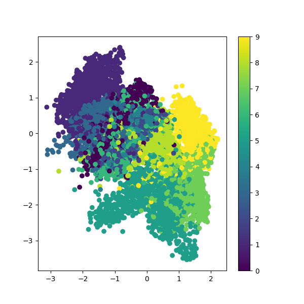
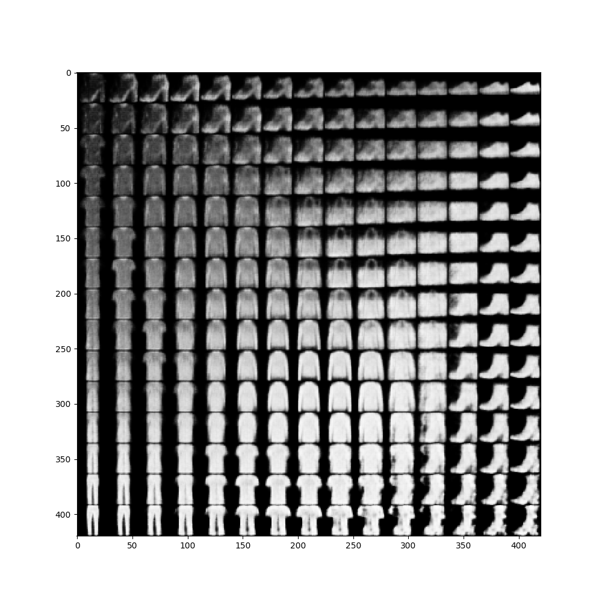

变分自编码器(VAE) 直观推导
最近一周系统的看下概率论的东西，把公式都看了下，这次重新对VAE做一个直观的推导，我这里就不说VAE为什么要这么做(水平不够)，只说他是怎么做的。
编码器网络结构
一般的编码器网络，是通过构造隐变量\(z\)，学习从\(x\rightarrow z\)的编码器，以及从\(z\rightarrow \tilde{x}\)的解码器。但是他们的损失函数只是简单的\((x-\tilde{x})^2\)或者\(p(x)\log p(\tilde{x})\)，最终缺乏一个生成的效果。

变分自编码器结构
VAE的思想说白了就是为了得到生成的效果，给隐变量\(z\)制造不确定性，然后就使用到了概率论的方案。让\(z\)成为一种概率分布，那么训练完成之后，只要给出不同的\(z\)就可以得到不同的\(\tilde{x}\)，增加了生成性。
下面就是VAE的公式。使用神经网络拟合编码器\(p(z|x)\)和解码器\(p(\tilde{x}|z)\)，用KL散度使隐变量\(z\)的分布接近于标准正态分布，用交叉熵使生成样本相似与原始样本。这里其实很巧妙，如果\(z\)只有均值且为0，那也就是和以前的编码器一样，没有生成效果，但是\(z\)还有方差项，可以提供噪声来保证生成能力。 \[
\begin{aligned}
p(z)&=p(z|x)p(x)\ \ \ \ \text{Encoder}\\
p(\tilde{x})&=p(\tilde{x}|z)p(z) \ \ \ \ \text{Decoder}\\
\\
\because \text{要使}\ \ p(z)&\sim N(0,1) \\
\therefore \mathcal{L}_{kl}&=KL(p(z)\| N(0,1)) \ \ \ \ \text{KL散度}\\
\\
\because \text{要使}\ \ p(x)&\approx p(\tilde{x}) \\
\therefore \mathcal{L}_{re}&= p(x)\log p(\tilde{x}) \ \ \ \ \text{交叉熵} \\
\\
\therefore \mathcal{L}&=\mathcal{L}_{kl}+\mathcal{L}_{re}
\end{aligned}
\]
下面是示意图： 
损失函数计算
重构损失
\(\mathcal{L}_{re}\)计算很简单，直接使用tf.nn.sigmoid_cross_entropy_with_logits即可。
KL损失
这个需要好好推导： \[ \begin{aligned} &KL(p({z}|x)\| N(0,1))=\int p({z}|x)\ \log\frac{p({z}|x)}{N(0,1)}\ dz \\ &=\int p({z}|x)\ \log \frac{\frac{1}{\sqrt{2\pi \sigma^2}}e^{-\frac{(z-\mu)^2}{2\sigma^2}}}{\frac{1}{\sqrt{2\pi}}e^{-\frac{z^2}{2}}}\ dz \\ &=\int p({z}|x)\ [\log\frac{1}{\sqrt{\sigma^2}}+\log e^{\frac{1}{2}(z^2-\frac{(z-\mu)^2}{\sigma^2})}]\ dz\\ &=\int p({z}|x)\ [-\frac{1}{2}\log \sigma^2+\frac{1}{2}(z^2-\frac{(z-\mu)^2}{\sigma^2})]\ dz \\ &=\int p({z}|x)\ [-\frac{1}{2}\log \sigma^2+\frac{1}{2}(z^2-\frac{(z-\mu)^2}{\sigma^2})]\ dz \\ &=\frac{1}{2}[-\int p({z}|x)\ \log \sigma^2 \ dz +\int p({z}|x)\ z^2\ dz-\int p({z}|x)\ \frac{(z-\mu)^2}{\sigma^2}\ dz] \\ &=\frac{1}{2}[-\log\sigma^2+E(z^2)-\frac{D(z)}{\sigma^2}] \\ &=\frac{1}{2}(-\log\sigma^2+\mu^2+\sigma^2-1) \end{aligned} \]
注意： 上面的\(p({z}|x)\)其实就是正态分布的概率，所以\(\int p({z}|x)\ dz=1\)。后面两个就是求\(z^2\)的期望，和\(z\)的方差。
重参数技巧
这个其实和算法没多大关系，就是因为随机采样的操作无法求导，只能对采样出来的值求导。所以就使用如下技巧：
从\(N(\mu,\sigma^2)\)中采样一个\(z\)，相当于从\(N(0,1)\)中采样一个\(\epsilon\)，然后让\(z=\mu+\epsilon\times\sigma\)。
这样就可以直接对值求导即可,概念图如下

代码
代码运行环境为Tensorflow 1.14：
import tensorflow.python as tf
from tensorflow.python import keras as k
from tensorflow.python.keras import layers as kl
from tensorflow.python.keras import activations as ka
import matplotlib.pyplot as plt
import numpy as np
from scipy.stats import norm
from scipy.special import expit
config = tf.ConfigProto()
config.gpu_options.allow_growth = True
k.backend.set_session(tf.Session(config=config))
(x_train, y_train), (x_test, y_test) = k.datasets.fashion_mnist.load_data()
x_train = np.expand_dims(x_train, -1) / 255.
x_test = np.expand_dims(x_test, -1) / 255.
image_size = 28
input_shape = (image_size, image_size, 1)
batch_size = 100
kernel_size = 3
filters = 16
latent_dim = 2 # 隐变量取2维只是为了方便后面画图
epochs = 30
tf.set_random_seed(9102)
def encoder_fn(inputs, filters):
x = inputs
for i in range(2):
filters *= 2
x = kl.Conv2D(filters=filters, kernel_size=kernel_size, activation='relu', strides=2, padding='same')(x)
x = kl.Flatten()(x)
x = kl.Dense(32, activation='relu')(x)
μ = kl.Dense(latent_dim)(x)
σ = kl.Dense(latent_dim)(x)
return μ, σ
def sampling(args):
""" 重参数技巧 """
μ, σ = args
ε = tf.random_normal(shape=tf.shape(μ))
return μ + tf.exp(σ / 2) * ε
def decoder_fn(z, filters):
x = kl.Dense(7 * 7 * 32, activation='relu')(z)
x = kl.Reshape((7, 7, 32))(x)
for i in range(2):
x = kl.Conv2DTranspose(filters=filters, kernel_size=kernel_size, activation='relu', strides=2, padding='same')(x)
filters //= 2
x = kl.Conv2DTranspose(1, kernel_size, activation=None, padding='same')(x)
return x
def loss_fn(inputs, outputs, μ, σ):
# 这里求和的时候先按每个样本求和，再按样本求平均
xent_loss = tf.reduce_sum(tf.nn.sigmoid_cross_entropy_with_logits(labels=x_in, logits=x_out), axis=[1, 2, 3])
# xent_loss = tf.reduce_sum(k.backend.binary_crossentropy(x_in, x_out), axis=[1, 2, 3])
kl_loss = - 0.5 * tf.reduce_sum(1 + σ - tf.square(μ) - tf.exp(σ), axis=-1)
vae_loss = tf.reduce_mean(xent_loss + kl_loss)
return vae_loss
x_in = k.Input(shape=(image_size, image_size, 1))
μ, σ = encoder_fn(x_in, filters)
z = kl.Lambda(sampling, output_shape=(latent_dim,))([μ, σ])
latent_inputs = k.Input(shape=(latent_dim,), dtype=tf.float32)
outputs = decoder_fn(latent_inputs, filters)
decoder = k.Model(latent_inputs, outputs)
x_out = decoder(z)
encoder = k.Model(x_in, μ)
vae = k.Model(x_in, x_out)
vae.add_loss(loss_fn(x_in, x_out, μ, σ))
vae.compile(k.optimizers.Nadam(0.001))
vae.fit(x=x_train, batch_size=batch_size, epochs=epochs, shuffle=True, validation_data=(x_test, None))
x_test_encoded = encoder.predict(x_test, batch_size=batch_size)
plt.figure(figsize=(6, 6))
plt.scatter(x_test_encoded[:, 0], x_test_encoded[:, 1], c=y_test)
plt.colorbar()
plt.show()
# 观察隐变量的两个维度变化是如何影响输出结果的
n = 15 # figure with 15x15 digits
figure = np.zeros((image_size * n, image_size * n))
# 用正态分布的分位数来构建隐变量对
grid_x = norm.ppf(np.linspace(0.05, 0.95, n))
grid_y = norm.ppf(np.linspace(0.05, 0.95, n))
for i, yi in enumerate(grid_x):
for j, xi in enumerate(grid_y):
z_sample = np.array([[xi, yi]])
x_decoded = expit(decoder.predict(z_sample))
digit = x_decoded[0].reshape(image_size, image_size)
figure[i * image_size: (i + 1) * image_size,
j * image_size: (j + 1) * image_size] = digit
plt.figure(figsize=(10, 10))
plt.imshow(figure, cmap='Greys_r')
plt.show()结果
隐空间图像

重构图像
